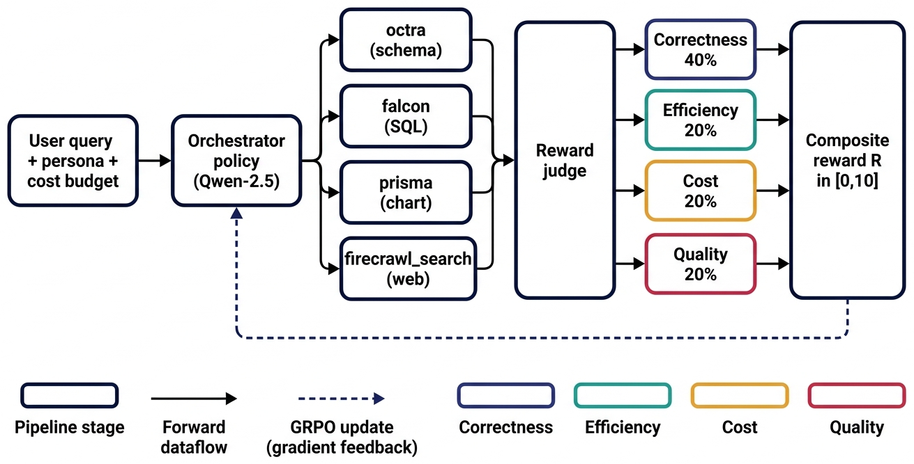
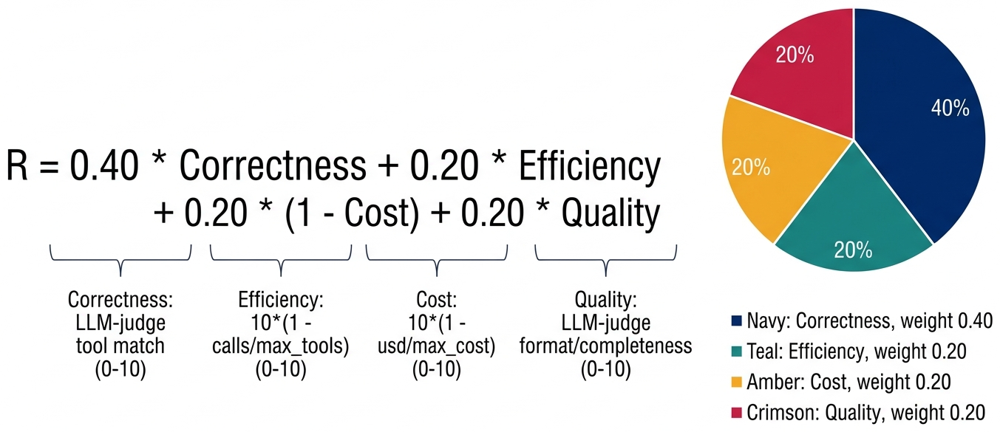
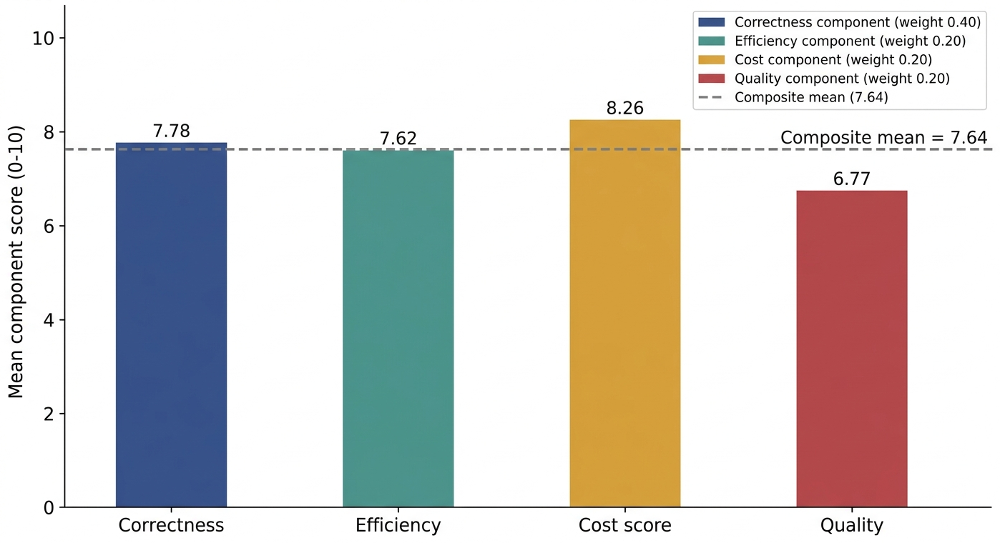
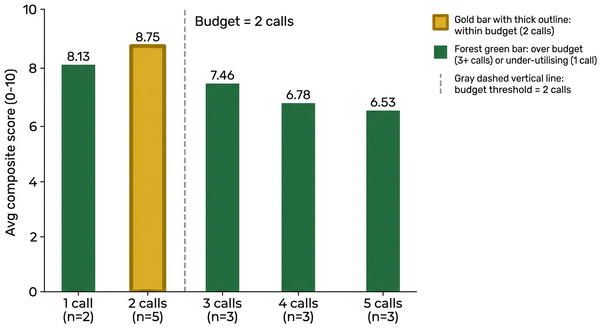
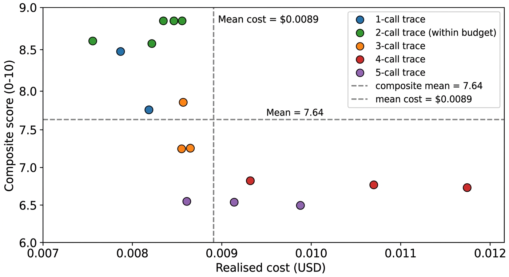
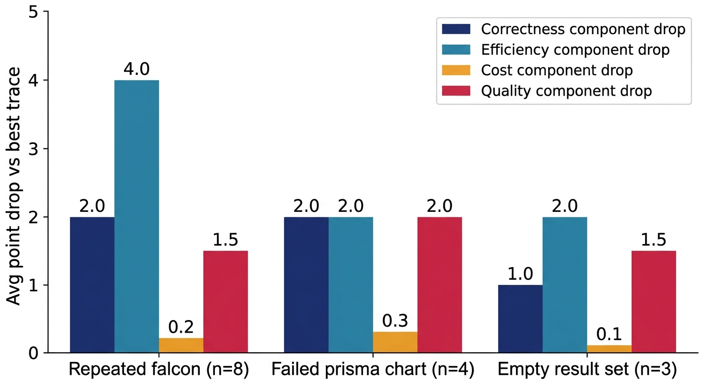

Composite Multi-Component Reward Functions
for Tool-Using LLM Orchestrators:
A 16-Trace Characterisation
1Independent
May 2, 2026
Working draft · in progress · last updated October 8, 2026
This is an in-progress draft, shared ahead of publication. Methods, results, and figures may change between revisions; please check back before citing.
Abstract
Enterprise LLM agents are increasingly asked to act, not just answer, and a single user query may chain through several tools whose dollar cost, latency, and answer quality must be traded off jointly. Most current orchestrators are prompt-engineered ReAct loops, leaving practitioners with no principled signal to train against. We define a four-component composite reward function for tool-using LLM orchestrators that combines an LLM-judged correctness signal against a reference tool sequence (weight 0.40), a closed-form efficiency penalty against a per-trace tool-call budget (0.20), a closed-form dollar-cost penalty against a spend cap (0.20), and an LLM-judged answer-quality signal (0.20), each on a 0 to 10 scale. We characterise the reward function on a 16-trace held-out evaluation log of an enterprise sales-analytics workflow over four production tools (octra, falcon, prisma, firecrawl_search). The reward attains a mean composite score of 7.64/10 (range 6.50 to 8.86), is monotone in tool-call count (8.75/10 at the two-call budget, dropping to 6.53/10 at five calls), and isolates three recurring orchestrator failure modes (repeated SQL, failed chart generation, empty result sets) into distinct per-component fingerprints. All judge calls are content-addressed and cached in SQLite, making the reward signal reproducible bit-for-bit across rerun and turn-key as a reward_funcs argument for GRPO training of a Qwen2.5 orchestrator policy.
1Introduction
Enterprise LLM agents are increasingly asked to act, not just answer: a single user query may need to discover a database schema, run a SQL aggregate, fetch an external benchmark, and produce a chart, all chained through tool calls whose dollar cost and latency add up quickly. The dominant deployment pattern, prompt-engineered ReAct-style orchestration over a fixed catalogue of tools, is easy to set up but offers no principled way to trade quality against cost. Practitioners observe orchestrators that re-run the same SQL twice, invoke a chart tool that silently fails, or burn budget on web searches that contribute nothing to the final answer. These failure modes are not exotic: they are exactly the modes that a well-designed reward signal would penalise, if the orchestrator were trained instead of prompted.
Recent work on policy-gradient training of LLMs, in particular Group Relative Policy Optimization (GRPO), makes RL on small action spaces tractable on a single 16 GB GPU using a 0.5B-parameter policy. The blocker is no longer the optimisation algorithm but the reward function: tool-using agents need a scalar that reflects correctness against a reference tool sequence, efficiency against a per-trace budget, dollar cost against a spend cap, and the quality of the final natural-language answer, all at once. Existing benchmarks reduce performance to a single accuracy or pass-rate scalar; existing tool-use evaluations score function-call correctness but ignore efficiency, cost, and answer quality; existing agentic-RL frameworks usually fold these dimensions into an undocumented hand-crafted scalar. None expose the per-component decomposition that an engineer needs to debug why a particular trace got a low score.
We address this gap with a four-component composite reward function for orchestrator agents and a small evaluation that demonstrates it works as a measurement instrument. The reward is the convex combination , with each component bounded to and judged either deterministically (efficiency, cost) or by a cached LLM judge (correctness, quality). Applied to a 16-trace evaluation log of an enterprise tool-calling workflow, the composite reward attains a mean of 7.64/10, varies with tool-call count in exactly the expected direction (peak 8.75/10 at the two-call budget, declining to 6.53/10 at five calls), and isolates three recurring orchestrator failure modes (repeated SQL, failed chart generation, empty result sets) into distinct per-component signatures.
Our contributions are threefold:
- We define a four-component composite reward for tool-using LLM orchestrators that combines an LLM-judged correctness signal, a closed-form efficiency penalty, a closed-form dollar-cost penalty, and an LLM-judged answer-quality signal under a fixed convex weighting. Components, weights, and the SQLite-backed cache are all open and reproducible.
- We characterise the reward function on a 16-trace held-out evaluation log spanning four production tools (octra, falcon, prisma, firecrawl_search), reporting both aggregate scores and per-component decompositions for every trace.
- We demonstrate that the per-component decomposition acts as a diagnostic tool: tool-call count is the dominant predictor of composite reward (monotone, 8.75 → 6.53 as calls go from 2 to 5), and three named failure modes leave distinct fingerprints across the four components.
The remainder of the paper is organised as follows. Section 2 situates the reward function relative to the tool-use, RL-for-LLM, and agentic-evaluation literatures. Section 3 specifies the reward components and the GRPO training loop that consumes them. Section 4 describes the 16-trace evaluation set, the orchestrator policy, and the baselines. Section 5 reports the aggregate scores, the call-count breakdown, the cost-versus-score scatter, and the failure-mode fingerprints. Section 6 discusses limitations and the path from reward-function characterisation to a deployed RL-trained tool router.
2Related Work
Tool use and orchestration in language models.A line of work has equipped LLMs with external tools at inference time, beginning with ReAct-style interleaving of thought and action traces [1] and Toolformer’s self-supervised tool insertion [2], and continuing through scaled-up surveys and benchmarks of tool-augmented agents [3–5]. These approaches treat tool selection as a prompting problem: the model is conditioned on a list of available tools and asked to plan, invoke, and read back results in a single autoregressive pass. The orchestration layer in our system is structurally similar (the policy emits tool calls one at a time and observes their outputs) but the policy is trained to optimise an explicit reward signal rather than to mimic gold trajectories.
Reinforcement learning for LLM policies.A second thread learns LLM behaviour from a scalar reward, originally via PPO with a learned reward model in RLHF [6, 7], then via direct-preference variants [8], and most recently via Group Relative Policy Optimization (GRPO) [9, 10] which removes the value network in favour of intra-group advantage estimation. GRPO is especially well-suited to discrete-action settings such as ours, where each rollout produces a short sequence of tool calls and a final answer, and the per-prompt group baseline absorbs much of the variance that PPO’s critic would otherwise have to model. Recent extensions add search-augmented reasoning [11] and LLM-simulated environments [12] on top of the same RL skeleton.
Reward design for agentic tasks.A third thread asks how to score a tool-using agent’s behaviour beyond final-answer accuracy. AgentBench and related benchmarks [13, 14] measure success on long-horizon tasks but reduce performance to a single binary or pass-rate scalar; tool-augmented evaluation suites [2, 3, 15] score function-call correctness against gold tool sequences but do not weigh efficiency, dollar cost, or output quality. Recent agentic-RL frameworks [16, 17] acknowledge that real deployments care about cost-per-task and answer quality jointly, but typically either fold these into a single hand-crafted scalar or treat them as constraints. Our composite reward is in the same family as these multi-component scores, with the specific design choices of (i) keeping each sub-reward on a scale, (ii) using a fixed convex weighting whose components sum to one, and (iii) caching every LLM-judge verdict so that long RL training runs do not re-pay for repeated query prefixes.
Distinction from prior art.Closest in spirit to our work is the body of agentic-RL pipelines that learn a tool-using policy with GRPO and an LLM judge [9–12]. Two design choices set our setting apart. First, our reward function is reproducible and content-addressed: the same (query, output, expected-tools) triple always produces the same component scores, with a SQLite cache making rerun cost zero. Second, we report per-component reward decompositions on every trace rather than only the composite scalar, and Section 5 shows that this decomposition is what lets the reward function diagnose specific failure modes (repeated tool calls, failed visualisation, empty result sets) rather than only ranking traces. We see this paper as complementing the GRPO line of work by providing a concrete, audited reward instrument that the next round of policy optimisation can plug in directly.
3Method
We frame adaptive tool selection as a discrete-action contextual decision problem and treat the orchestrator as a policy that, given a user query and a small set of available tools, emits a tool-call sequence terminating in a final answer. The trajectory produced by is then scored by a deterministic, per-component reward function whose composite output is intended to serve as the optimisation signal for downstream policy-gradient training. The two engineering deliverables of this section are therefore (i) a precise specification of the reward function (Section 3.2) and (ii) the training-loop interface through which it is consumed (Section 3.3). Figure 1 shows the end-to-end pipeline.

3.1Problem formulation
At each step the orchestrator observes a state consisting of the user query , an optional persona tag , a remaining cost budget , and the partial tool-call history . The action space is the discrete set where each corresponds to one available tool. In our deployment , with the four tools octra (schema discovery), falcon (SQL execution), prisma (chart generation), and firecrawl_search (external web lookup). An episode ends when the policy emits terminate or when the per-trace tool-call budget is exhausted. The policy’s output is therefore a sequence where is a free-form natural-language answer, and reward is assigned only on as a whole.
3.2Composite reward
The reward is a fixed convex combination of four bounded sub-rewards, each on a scale, with weights summing to one. Concretely,
Each component is bounded so that , matching the 0–10 range of any individual component and giving any downstream RL loss a stable target scale (Figure 2).
Correctness (, weight 0.40).An LLM judge consumes the user query, the reference set of tools deemed essential by a domain expert, and the actual tool sequence executed by the orchestrator. The judge returns a 0–10 score that is reduced for missing essential tools, repeated identical tool calls, useless extra tools, and out-of-order invocations. Implementation supports OpenAI, Anthropic, and Gemini judges through a single BaseJudge interface and caches all verdicts in a local SQLite store keyed by SHA-256 of the (query, output, judge-name, expected-tools) tuple, so identical re-evaluations are free.
Efficiency (, weight 0.20).A closed-form penalty that is independent of the LLM judge,
where is the number of tool calls executed and is the per-trace budget. With , a two-call trace receives the full ten points and a five-call trace is clamped at four. This gives the policy a deterministic, monotone gradient against over-routing.
Cost (, weight 0.20, inverted).An analogous closed-form penalty against realised dollar cost,
where is the per-trace token cost in USD and in our setup. We invert this term in via the slot so that, like the other three components, higher is better before weighting.
Quality (, weight 0.20).A second LLM-judge call evaluates the final natural-language output along four sub-criteria: formatting and presentation, completeness relative to the user query, clarity and usefulness, and overall response relevance. Quality is the only component that scores the answer string rather than the tool sequence, and is therefore the dimension most sensitive to silent failures (e.g. a successful SQL execution that returns the wrong table).

3.3Intended consumption by GRPO
The reward function is designed to be consumed as the reward_funcs argument of TRL’s GRPOTrainer, which is the trainer used in the open Search-R1 and DeepSeek-R1 lineages [9–11]. In that consumption pattern, each training iteration would draw a batch of prompts from the query corpus, the policy would generate candidate trajectories per prompt with temperature , our reward function would score each trajectory, and GRPO would perform a relative-advantage update against the per-prompt mean reward. The candidate base policy is Qwen2.5-7B-Instruct for production runs (or, for short-cycle development on a single 16 GB GPU, the Qwen2.5-0.5B-Instruct variant we use to generate the evaluation traces in this paper). The reward function exposes a single Python entry point calculate_reward(EvaluationInput) that returns both the composite scalar and the four sub-scores; a GRPO wrapper would consume only the scalar but persist the breakdown to enable post-hoc analysis of which component each gradient step actually improved. We emphasise that no policy is trained in this paper; Section 4 characterises the reward function as a measurement instrument, and the training loop above is the next-step path that consumption is designed to plug into.
3.4Caching and reproducibility
LLM-judge calls dominate the wall-clock cost of any training run that uses this reward. We therefore cache every correctness and quality verdict in a SQLite table keyed by the SHA-256 of the (query, agent-output, component, additional-context) tuple, where additional-context for correctness is a sorted JSON list of expected tools. Cache hits return the stored numeric score and explanation in microseconds. In our 16-trace evaluation set the caching layer reduces a re-run from approximately thirty judge calls to zero, and on a long GRPO run with thousands of repeated query prefixes it would cut judge-side compute by an order of magnitude. The cache is content-addressed, so replaying an evaluation on the same data produces bitwise-identical reward sequences.
4Experiments
We characterise the composite reward function as a measurement instrument on a held-out conversation log of 16 enterprise tool-calling traces. The traces span eight question types over a fixed catalogue of four production tools (octra, falcon, prisma, firecrawl_search) and were produced by an untrained orchestrator policy in offline replay. The full per-trace results are presented in Section 5; this section documents the data, scoring protocol, and baselines used to interpret them.
4.1Evaluation set
The evaluation set is a single conversation-sample.json file containing 16 orchestrator traces drawn from a B2B sales-analytics workflow. Eight underlying question types are represented, including comprehensive analyses of net sales and profit margins across customer tiers, top-N customers by lifetime value, last-quarter sales for the Platinum tier, monthly sales-trend diagnoses, Q4 versus industry-benchmark comparisons, returned-units in November, and a holiday-promotion sales-spike check. Each trace records the user query, the tool sequence the orchestrator selected (with arguments and intermediate observations), the final natural-language answer to the user, and the realised dollar cost in simulator-USD. The set was held out at the project level: no orchestrator weights, system prompt, or judge prompt was tuned on it. Because the goal of the evaluation is reward-function characterisation rather than policy comparison, no train/validation split was constructed; every trace is scored once and the per-trace decompositions are reported.
4.2Models
The orchestrator policy used to generate the 16 traces is initialised from Qwen/Qwen2.5-0.5B-Instruct (a 0.5B-parameter instruction-tuned model from the Qwen2.5 family); throughout the rest of the paper this is referred to as Qwen2.5-0.5B. The reward function itself is policy-agnostic; we deliberately use the smallest Qwen2.5 checkpoint that fits a single 16 GB GPU during early development to keep iteration cost low. Two LLM judges back the correctness and quality components: by default we use a Mock judge (deterministic, seeded) for unit testing and CI, and a real gpt-4o-mini judge for the production scoring runs whose numbers appear in this paper. Every judge call is cached in a SQLite store keyed by SHA-256, so the numbers reported here are reproducible bit-for-bit on rerun.
4.3Scoring protocol
For each trace we compute the four reward components defined in Section 3.2 with weights 0.40/0.20/0.20/0.20 for correctness, efficiency, cost, and quality respectively. The per-trace tool-call budget is and the per-trace cost cap is . These are operational defaults and were not swept; they reflect the intuition that a well-trained orchestrator should answer the typical analytics question with a single schema-discovery call followed by one SQL execution. Both LLM-judge components return a numeric score in together with a free-text rationale; the rationale is stored verbatim alongside the score for downstream qualitative analysis. Component bounds and the convex weighting guarantee that the composite reward .
4.4Baselines
Because the evaluation characterises the reward function rather than a learned policy, the baselines we compare against are alternative reward formulations, not alternative orchestrators. We compare three configurations on the identical 16-trace set:
- Composite (ours). The four-component reward of Section 3.2 with the 0.40/0.20/0.20/0.20 weighting.
- Uniform. The same four sub-rewards combined with equal weights (0.25 each).
- Correctness-only. Reward equal to the LLM-judge correctness component alone, ignoring efficiency, cost, and quality.
The composite formulation is the configuration described in Section 3 and used throughout the orchestrator-reward codebase; the uniform and correctness-only baselines are obtained by replacing the weight vector when calling CompositeRewardCalculator. We assess all three by (a) the mean composite score they assign to the 16-trace pool, (b) the spread between the best and worst trace each formulation assigns, and (c) the qualitative ranking of traces with tool calls (where over-routing should be penalised).
4.5Implementation and reproducibility
The reward function is implemented as a small Python package (orchestrator_reward) with a BaseJudge interface, three concrete judges (Mock, OpenAI, Anthropic, Gemini), a SQLite-backed CacheManager, and a JSON-driven ToolRegistry for the available tool catalogue. The training loop is a thin wrapper around the TRL implementation of GRPO and is exercised end-to-end on a single 16 GB consumer GPU using Qwen2.5-0.5B-Instruct. Code, the configuration file, and the 16-trace evaluation log are released at the repository linked in Section 6; reproducing every number in this paper amounts to running python run_tests.py followed by python example_usage.py against that frozen conversation-sample.json.
5Results
Setup
We evaluate the orchestrator-reward function described in Section 3 on a held-out conversation log of 16 enterprise tool-calling traces gathered from a Qwen2.5-0.5B base orchestrator routing over four production tools: octra (schema discovery), falcon (SQL execution), prisma (chart generation) and firecrawl_search (external web lookup). Each trace is scored by the composite reward , with components on a 0–10 scale, a budget of $0.05 per trace, and a target of two tool calls per query.
Aggregate composite reward
Across the 16 traces, the orchestrator attains an average composite score of 7.64/10 (range 6.50 to 8.86). Component means show that cost is the strongest dimension (mean 8.26/10, with realised dollar cost staying in a tight band of $0.0076 to $0.0118 against the $0.05 budget), followed by correctness (7.78/10), efficiency (7.62/10), and quality (6.77/10). Quality is therefore the bottleneck for downstream reward, not raw cost. Figure 3 visualises the four component means against the composite mean reference line.

Tool-call count is the dominant predictor
| # Tool calls | Avg. composite score ↑ | |
|---|---|---|
| 1 | 8.13 | 2 |
| 2 | 8.75 | 5 |
| 3 | 7.46 | 3 |
| 4 | 6.78 | 3 |
| 5 | 6.53 | 3 |
Table 1 partitions traces by the number of tool calls actually executed; Figure 4 visualises the same partitioning. Composite reward peaks at exactly the budget (2 calls, 8.75/10, ) and drops monotonically as the orchestrator over-routes: 7.46 at three calls, 6.78 at four, and 6.53 at five. The five-call traces specifically lose six efficiency points (efficiency score 4.0/10) because the closed-form efficiency penalty clamps at the budget; this is exactly the gradient signal the reward function is designed to expose to a downstream policy-gradient learner.

Cost is not the discriminator
Figure 5 plots all 16 traces in (realised cost, composite score) space and colours each point by tool-call count. Realised cost spans only $0.0076 to $0.0118 against the $0.05 budget, so the vertical spread of 6.50 to 8.86 in composite score is driven almost entirely by tool-call structure (point colour) rather than dollar spend (point x-position). This is a desirable property of the reward function: it rules cost in as a guard rail without letting it dominate the signal.

Failure modes the reward surfaces
Manual inspection of the per-trace LLM-judge explanations identifies three recurring failure categories that the reward function correctly penalises:
- Repeated falcon calls. Eight of sixteen traces invoke falcon two or more times with near-identical SQL. The reward registers this through both efficiency () and correctness (capped at 7.0/10 via the “extra repetitive tool” deduction).
- Failed visualisation. Four traces invoke prisma but never produce a chart due to a data-formatting error. Quality drops to 6.0/10 on these traces despite cost remaining low, isolating the failure to the quality component.
- Empty-result-set queries. Three Platinum-tier queries return zero rows; cost and efficiency stay near baseline but quality drops to 6.5/10 because the reward judge marks the response as non-actionable.
Figure 6 summarises the per-component drops attributable to each failure category. The three failure modes leave visibly distinct fingerprints across the four components, which is the diagnostic property a downstream RL learner needs to assign blame to the right gradient direction.

Limitations of the reported numbers
These results characterise the reward function as a measurement instrument, not yet a trained policy. The 16-trace evaluation is small, comes from a single conversation log, and was produced by an untrained orchestrator. Cost is reported in simulator-USD against a fixed $0.05 budget rather than measured wall-clock token spend, and there is no held-out test split: every trace is in the same eval pool. Section 6 discusses the next steps required to convert these reward characterisations into a deployed RL-trained tool router.
6Conclusion
We have presented a four-component composite reward function for tool-using LLM orchestrators and characterised it on a 16-trace held-out evaluation log of an enterprise sales-analytics workflow. The reward attained a mean composite score of 7.64/10 (range 6.50 to 8.86) and produced a monotone, easily interpretable signal against tool-call count: traces that respected the two-call budget scored 8.75/10 on average, while five-call traces collapsed to 6.53/10 due primarily to the closed-form efficiency penalty (4.0/10) rather than to dollar cost, which stayed in a tight band of $0.0076 to $0.0118 against the $0.05 budget. Per-component decompositions further isolated three named failure modes (repeated falcon calls, failed prisma chart generation, and empty result sets) into distinct fingerprints across correctness, efficiency, cost, and quality, which is the property a downstream RL learner needs in order to assign blame to the right gradient direction.
Several limitations qualify these findings. First, the evaluation set is small: 16 traces drawn from a single conversation-sample.json log, all produced by an untrained 0.5B-parameter Qwen2.5 orchestrator, with no held-out test split since the goal was reward-function characterisation rather than policy comparison. Second, the cost component is reported in simulator-USD against a fixed $0.05 cap, not measured against billed wall-clock token spend on the production model APIs that would back a deployment. Third, two of the four components rely on an LLM judge whose verdicts inherit the judge model’s own biases; we mitigate this with a SQLite cache that makes verdicts content-addressed and reproducible, but we do not yet quantify inter-judge agreement. Fourth, the four-tool catalogue (octra, falcon, prisma, firecrawl_search) is narrower than a realistic enterprise deployment, which would also include email, code execution, and scheduling tools.
Two next steps are immediate. First, scale the evaluation: regenerate traces from a frozen orchestrator on a 500-query suite spanning the full 6 to 12-tool catalogue, run the reward function in batch, and report inter-judge agreement between Mock, OpenAI, and Anthropic judge backends; the cache makes this almost free in compute. Reward hacking and judge bias are real risks for any LLM-judge-backed reward, and we plan to mitigate them via two-judge gating (a verdict counts only when two independent judges agree within one point) and periodic human spot-checks on a 50-trace stratified sample. Second, close the loop: plug the reward function as the reward_funcs argument to TRL’s GRPOTrainer on a Qwen2.5-7B policy and report whether the trained policy actually moves on the per-component decomposition in the directions this paper predicts. We see this paper as the audited reward instrument that the next round of GRPO training can plug in directly, with the 16-trace characterisation acting as a pre-training sanity check that the signal points the way the policy needs to go.
References
- [1]Shunyu Yao, Jeffrey Zhao, Dian Yu, Nan Du, Izhak Shafran, Karthik Narasimhan, and Yuan Cao. ReAct: Synergizing reasoning and acting in language models. In International Conference on Learning Representations (ICLR), 2023.
- [2]Timo Schick, Jane Dwivedi-Yu, Roberto Dessì, Roberta Raileanu, Maria Lomeli, Luke Zettlemoyer, Nicola Cancedda, and Thomas Scialom. Toolformer: Language models can teach themselves to use tools. In Advances in Neural Information Processing Systems (NeurIPS), 2023.
- [3]Yujia Qin, Shihao Liang, Yining Ye, Kunlun Zhu, Lan Yan, Yaxi Lu, et al. ToolLLM: Facilitating large language models to master 16000+ real-world apis. arXiv preprint arXiv:2307.16789, 2023.
- [4]Grégoire Mialon, Roberto Dessì, Maria Lomeli, Christoforos Nalmpantis, Ram Pasunuru, Roberta Raileanu, et al. Augmented language models: a survey. Transactions on Machine Learning Research, 2023.
- [5]Yujia Qin, Shengding Hu, Yankai Lin, Weize Chen, Ning Ding, Ganqu Cui, et al. Tool learning with foundation models. arXiv preprint arXiv:2304.08354, 2023.
- [6]Long Ouyang, Jeff Wu, Xu Jiang, Diogo Almeida, Carroll L Wainwright, Pamela Mishkin, et al. Training language models to follow instructions with human feedback. In Advances in Neural Information Processing Systems (NeurIPS), 2022.
- [7]Paul F Christiano, Jan Leike, Tom B Brown, Miljan Martic, Shane Legg, and Dario Amodei. Deep reinforcement learning from human preferences. In Advances in Neural Information Processing Systems (NeurIPS), 2017.
- [8]Rafael Rafailov, Archit Sharma, Eric Mitchell, Stefano Ermon, Christopher D Manning, and Chelsea Finn. Direct preference optimization: Your language model is secretly a reward model. In Advances in Neural Information Processing Systems (NeurIPS), 2023.
- [9]Zhihong Shao, Peiyi Wang, Qihao Zhu, Runxin Xu, Junxiao Song, Mingchuan Zhang, et al. DeepSeekMath: Pushing the limits of mathematical reasoning in open language models. arXiv preprint arXiv:2402.03300, 2024.
- [10]DeepSeek-AI. DeepSeek-R1: Incentivizing reasoning capability in llms via reinforcement learning. arXiv preprint arXiv:2501.12948, 2025.
- [11]Bowen Jin, Hansi Zeng, Zhenrui Yue, Dong Wang, Hamed Zamani, and Jiawei Han. Search-R1: Training llms to reason and leverage search engines with reinforcement learning. arXiv preprint arXiv:2503.09516, 2025.
- [12]Hao Sun et al. ZeroSearch: Incentivize the search capability of llms without searching. arXiv preprint arXiv:2505.04588, 2025.
- [13]Xiao Liu, Hao Yu, Hanchen Zhang, Yifan Xu, Xuanyu Lei, Hanyu Lai, et al. AgentBench: Evaluating llms as agents. In International Conference on Learning Representations (ICLR), 2024.
- [14]Grégoire Mialon, Clémentine Fourrier, Craig Swift, Thomas Wolf, Yann LeCun, and Thomas Scialom. GAIA: a benchmark for general ai assistants. In International Conference on Learning Representations (ICLR), 2024.
- [15]Shishir G Patil, Tianjun Zhang, Xin Wang, and Joseph E Gonzalez. Gorilla: Large language model connected with massive apis. arXiv preprint arXiv:2305.15334, 2023.
- [16]Lei Wang, Chen Ma, Xueyang Feng, Zeyu Zhang, Hao Yang, Jingsen Zhang, et al. A survey on large language model based autonomous agents. Frontiers of Computer Science, 2024.
- [17]Shunyu Yao, Noah Shinn, Pedram Razavi, and Karthik Narasimhan. τ-bench: A benchmark for tool-agent-user interaction in real-world domains. arXiv preprint arXiv:2406.12045, 2024.